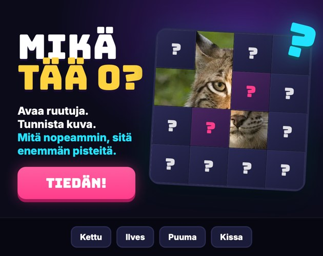

Kuvavisa netissä
Ilmainen tietovisa, jossa kuva paljastuu ruutu kerrallaan. Mitä vähemmän näet, sitä enemmän saat pisteitä. Pelaa yksin, haasta kaverit tai nouse viikkoliigan kärkeen.

Kuva on piilossa ruudukon alla. Jokainen avattu ruutu maksaa pisteitä, ja keskeltä avaaminen maksaa eniten.
Potti sulaa koko ajan. Aikaa on 20 sekuntia kuvaa kohden, joten nopea päättely palkitaan.
Kun tunnistat kuvan, paina Tiedän! ja valitse oikea vastaus neljästä vaihtoehdosta.
Ottelun edetessä kuvat muuttuvat lähikuviksi, mutta potti kasvaa. Lopuksi näet oikeat vastaukset ja tietoiskun jokaisesta kuvasta.
Kaikki pelaavat samoja kuvia koko viikon. Paras tulos jää tulostaululle.
Uusi kuvasarja joka päivä. Hyvä tapa aloittaa aamu kahvikupin ääressä.
Pelaa kierros ja lähetä linkki kaverille. Hän saa samat kuvat, ja näette kumpi oli nopeampi.
626 kuvaa kymmenistä aiheista: nisäkkäät, linnut ja vesieläimet, julkkikset ja historian henkilöt, maailman nähtävyydet ja Suomen paikat, liput, soittimet, kulkuneuvot, urheilu, kasvit, ruoat ja leivonnaiset, työkalut ja keittiövälineet, avaruus ja paljon muuta. Kuvat ovat oikeita valokuvia Wikimedia Commonsista.
Peli sopii koko perheelle visailuun, mökkiillan ajanvietteeksi ja kaveriporukan kisaksi. Jokaisen kuvan jälkeen voit lukea lyhyen tietoiskun, joten samalla oppii jotain uutta.
Ei. Peli on ilmainen, eikä siihen tarvita tunnuksia tai asennusta.
Sopii. Kuvat ovat eläimiä, kasveja, kulkuneuvoja, lippuja, ruokia ja tuttuja paikkoja, ja lukutaitoinen lapsi pärjää hyvin. Julkkiskuvat ovat aikuisillekin haastavia.
Valitse Kaverihaaste, pelaa kierros ja lähetä linkki esimerkiksi WhatsAppissa. Kaveri saa täsmälleen samat kuvat, ja tuloksia voi verrata.
Voi. Paina pelin aloitusvalikossa "Asenna puhelimeen", niin peli aukeaa kotinäytön kuvakkeesta koko näytölle.
Toimii. Englanninkielinen versio What is this? käyttää samoja kuvia ja samaa tulostaulua.
Kokeile. Ei rekisteröitymistä, peli alkaa heti.